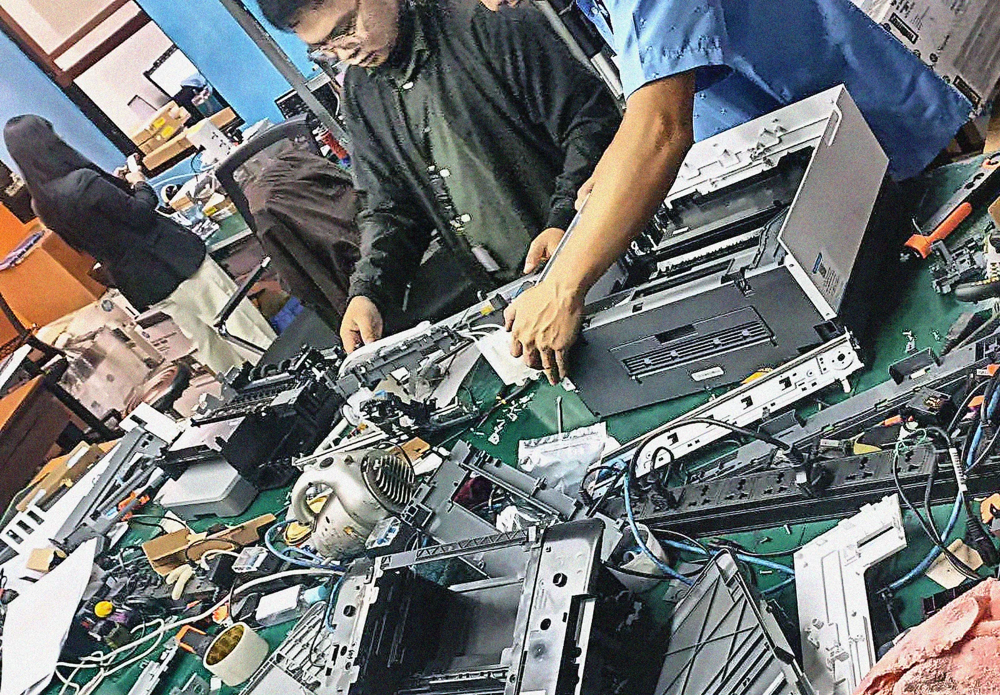

From support desk to cloud
Troubleshooting, incident handling, documentation and working to service requirements are the same habits cloud operations runs on. I am building the AWS side of that through certifications and projects I deploy myself.
- Now
- HRIS Technical Support, since July 2026
- 2025
- Field / Onsite Engineer, HP service centre
- 2024
- IT Intern, C# programmer
- Degree
- BSIT, Animation and Game Development, FEU Institute of Technology

Today
Level 1 support for an HR information system used by seafarers and office staff. I resolve and escalate issues, document known fixes, and support the vendor rollout, which is where the template tracker came from.


Milestones
-
2026
- RoleHRIS Technical SupportSince July 2026. Level 1 support for an HR information system, issue escalation, documentation, and support for the vendor rollout.
- ProjectTeolohiya.site goes liveA moderated book platform on Next.js and AWS Amplify Gen 2 with Cognito, AppSync, DynamoDB, S3 and Lambda.
- ProjectAWS Serverless Ticketing APIAPI Gateway, two Lambda functions, DynamoDB with a GSI and Streams, SNS alerts and CloudWatch monitoring.
- ProjectSecure EC2 Web ServerPractice build for VPC networking, security groups, IAM, Session Manager and EBS snapshots.
- ProjectHRIS Template Completion TrackerA daily Power Automate flow feeding a Power BI completion dashboard at work.
- ProjectECCM websiteA multi-page church website with a custom domain, responsive layout, sitemap and robots.txt.
- CertificationAWS Certified Cloud Practitioner and AWS Certified AI PractitionerAmazon Web Services; the AI Practitioner in July 2026.
- CertificationOCI Foundations Associate and OCI AI Foundations AssociateOracle Cloud Infrastructure.
- CertificationGoogle IT Support, and System Administration and IT InfrastructureGoogle, February 2026.
- CertificationNetworking BasicsCisco, January 2026.
-
2025
- RoleField / Onsite Engineer, HP service centreMay to November 2025. Printers, POS systems, laptops and workstations at client and partner sites.
-
2024
- RoleIT Intern, C# programmerJanuary to July 2024. Front-end and back-end C# work on company applications.
-
Degree
- EducationBSIT, Animation and Game DevelopmentFEU Institute of Technology, where Unity and C# gave me my first real programming.
-
2023
- CertificationAutodesk Certified User: MayaAutodesk, November 2023.
- CertificationNDG Linux EssentialsCisco Networking Academy.
-
2022
- CertificationCyberOps AssociateCisco, November 2022.
- CertificationCCNA: Switching, Routing, and Wireless EssentialsCisco, April 2022.
- CertificationInformation Technology Specialist in DatabasesCertiport, January 2022.
-
2021
- CertificationCCNA: Introduction to NetworksCisco, December 2021.